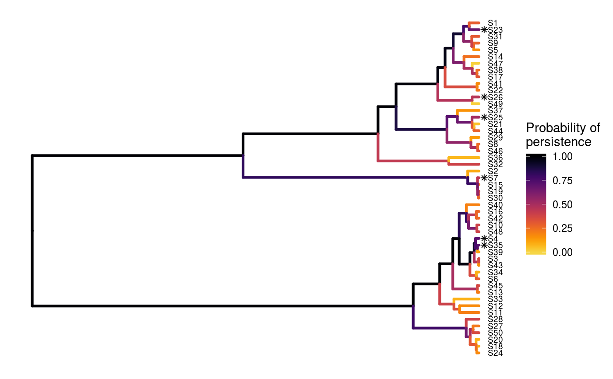
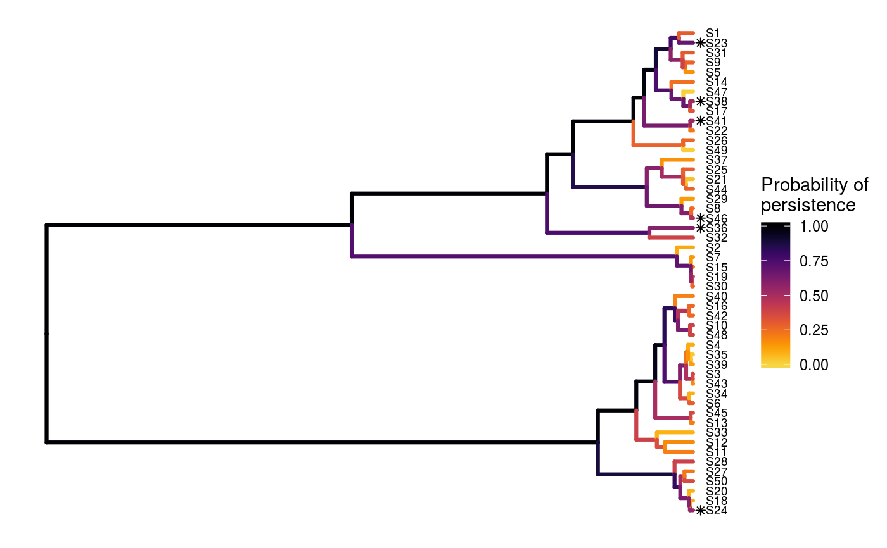
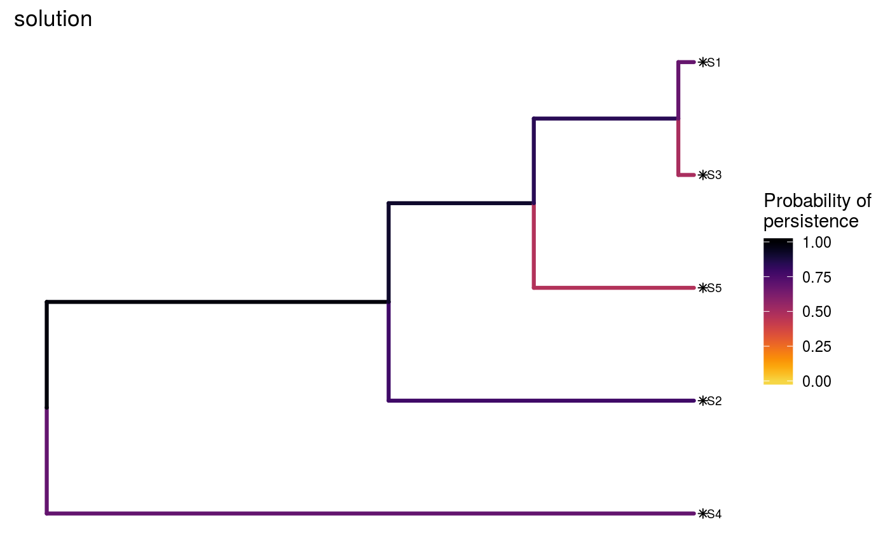
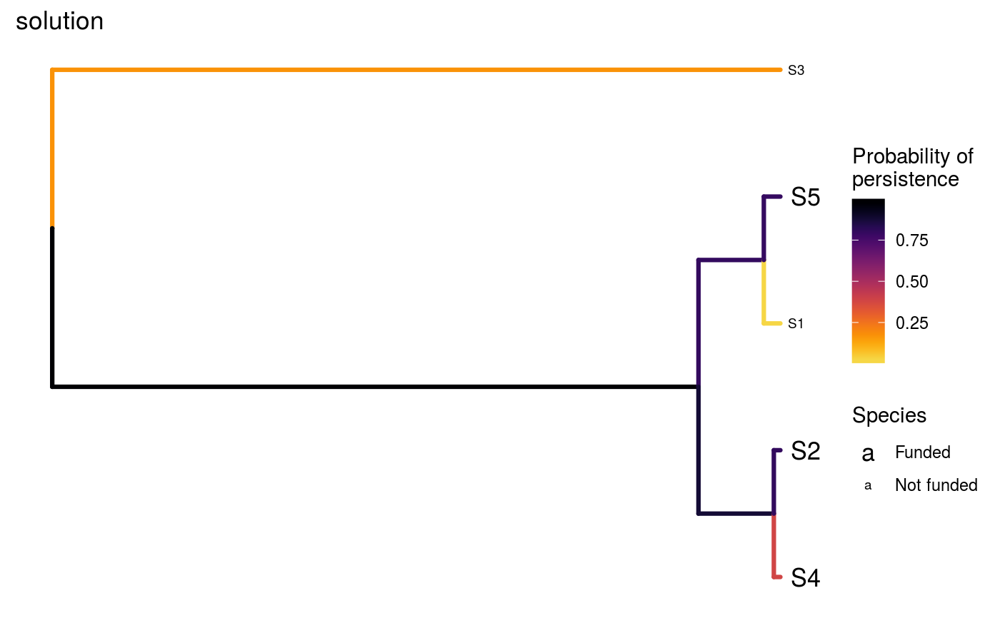
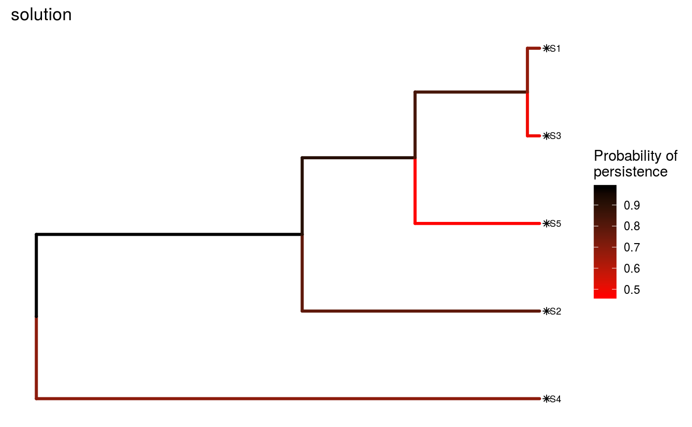
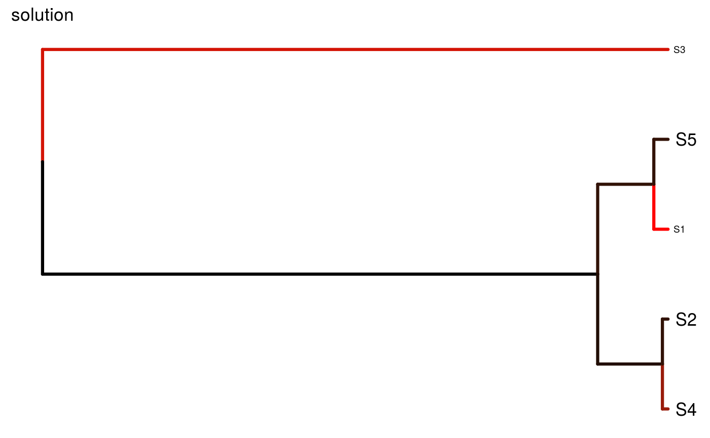

Create a plot displaying a phylogenetic tree (phylogram) to visualize a solution to the 'Project Prioritization Protocol' problem. In this plot, each phylogenetic branch is colored according to probability that it is expected to persist into the future. Additionally, species that benefit from at least a single funded project with a non-zero cost are denoted with a red asterisk symbol.
ppp_plot(x, tree, solution, project_column_name, cost_column_name, success_column_name, n = 1L, asterisk_hjust = 0.007)
Arguments
| x |
|
|---|---|
| tree |
|
| solution |
|
| project_column_name |
|
| cost_column_name |
|
| success_column_name |
|
| n |
|
| askterisk_hjust |
|
Details
This function requires the ggtree (Yu et al. 2017) and
treeio packages. Since these packages are distributed exclusively
through Bioconductor, and are not
available on the
Comprehensive R Archive Network,
please execute the following commands to install them:
source("https://bioconductor.org/biocLite.R");biocLite("ggtree").
If the installation process fails, please consult the ggtree and treeio packages' online documentation.
References
Yu G, Smith DK, Zhu H, Guan Y, & Lam TTY (2017) ggtree: an R package for visualization and annotation of phylogenetic trees with their covariates and other associated data. Methods in Ecology and Evolution, 8: 28--36.
See also
To generate solutions for the 'Project
Prioritization Protocol' problem, see ppp_heuristic_solution
ppp_exact_solution, ppp_manual_solution,
or ppp_random_solution.
Examples
# set seed for reproducibility set.seed(500) # load built-in data data(sim_project_data, sim_tree) # load packages to help with plotting library(ggplot2) # print simulated project data set print(sim_project_data)#> # A tibble: 6 x 10 #> name cost success locked_in locked_out S1 S2 S3 S4 S5 #> <chr> <dbl> <dbl> <lgl> <lgl> <dbl> <dbl> <dbl> <dbl> <dbl> #> 1 S1_project 94.4 0.847 FALSE FALSE 0.802 0 0 0 0 #> 2 S2_project 101. 0.969 FALSE FALSE 0 0.808 0 0 0 #> 3 S3_project 103. 0.732 FALSE TRUE 0 0 0.678 0 0 #> 4 S4_project 99.2 0.979 FALSE FALSE 0 0 0 0.703 0 #> 5 S5_project 99.9 0.714 TRUE FALSE 0 0 0 0 0.657 #> 6 baseline_p… 0 1 FALSE FALSE 0.293 0.388 0.0120 0.195 0.124# print simulated phylogenetic tree data set print(sim_tree)#> #> Phylogenetic tree with 5 tips and 4 internal nodes. #> #> Tip labels: #> [1] "S3" "S1" "S5" "S2" "S4" #> #> Rooted; includes branch lengths.# plot the simulated phylogeny plot(sim_tree, main = "simulated phylogeny")solutions <- data.frame(S1_project = c(FALSE, FALSE, TRUE), S2_project = c(TRUE, FALSE, TRUE), S4_project = c(TRUE, FALSE, TRUE), S3_project = c(FALSE, FALSE, TRUE), S5_project = c(TRUE, FALSE, TRUE), baseline_project = c(TRUE, TRUE, TRUE)) print(solutions)#> S1_project S2_project S4_project S3_project S5_project baseline_project #> 1 FALSE TRUE TRUE FALSE TRUE TRUE #> 2 FALSE FALSE FALSE FALSE FALSE TRUE #> 3 TRUE TRUE TRUE TRUE TRUE TRUE# create random some solutions with a budget of 700 s1 <- ppp_random_solution(sim_project_data, sim_tree, 700, "name", "cost", "success", number_solutions = 10) # print output print(s1)#> # A tibble: 10 x 12 #> solution objective budget cost optimal method S1_project S2_project #> <int> <dbl> <dbl> <dbl> <lgl> <chr> <lgl> <lgl> #> 1 1 3.85 700 498. NA random TRUE TRUE #> 2 2 3.85 700 498. NA random TRUE TRUE #> 3 3 3.85 700 498. NA random TRUE TRUE #> 4 4 3.85 700 498. NA random TRUE TRUE #> 5 5 3.85 700 498. NA random TRUE TRUE #> 6 6 3.85 700 498. NA random TRUE TRUE #> 7 7 3.85 700 498. NA random TRUE TRUE #> 8 8 3.85 700 498. NA random TRUE TRUE #> 9 9 3.85 700 498. NA random TRUE TRUE #> 10 10 3.85 700 498. NA random TRUE TRUE #> # ... with 4 more variables: S3_project <lgl>, S4_project <lgl>, #> # S5_project <lgl>, baseline_project <lgl># plot the first solution ppp_plot(sim_project_data, sim_tree, s1, "name", "cost", "success")# plot the second solution ppp_plot(sim_project_data, sim_tree, s1, "name", "cost", "success", n = 2)# since this function returns a ggplot2 plot object, we can customize the # appearance of the plot using standard ggplot2 commands! # for example, we can add a title ppp_plot(sim_project_data, sim_tree, s1, "name", "cost", "success") + ggtitle("solution")# we could also also set the minimum and maximum values in the color ramp to # correspond to those in the data, rather than being capped at 0 and 1 ppp_plot(sim_project_data, sim_tree, s1, "name", "cost", "success") + scale_color_gradientn(name = "Probability of\npersistence", colors = viridisLite::inferno(150, begin = 0, end = 0.9, direction = -1)) + ggtitle("solution")#> #># we could also change the color ramp ppp_plot(sim_project_data, sim_tree, s1, "name", "cost", "success") + scale_color_gradient(name = "Probability of\npersistence", low = "red", high = "black") + ggtitle("solution")#> #># we could even hide the legend if desired ppp_plot(sim_project_data, sim_tree, s1, "name", "cost", "success") + scale_color_gradient(name = "Probability of\npersistence", low = "red", high = "black") + theme(legend.position = "hide") + ggtitle("solution")#> #>